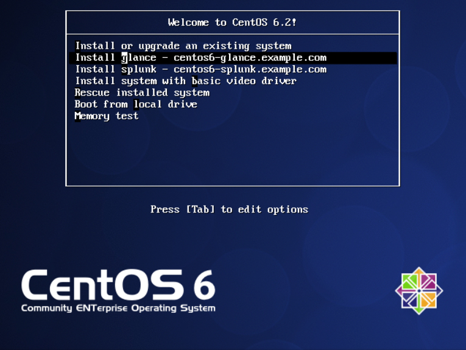

Glance provides services used by OpenStack project for discovering, registering, and retrieving disk images. For this purpose it has it's own API, which can be used by programming languages and also CLI.
Splunk is a software used for collecting, indexing from various sources which can be analysed. Splunk has web-gui through which you can easily display graphs, statistics and reports of collected data.
The goal of this document is to show possibilities how the logs generated by Glance can be transferred and indexed by Splunk. The suggested solution is just a simple example how to do it. It doesn't describe any kind of redundancy (except bonding configuration) or high availability. Fully redundant solution will probably include forwarders, keepalived and more advanced stuff - but this is not a goal of this project. You can find the necessary files and sources in the repository: https://github.com/ruzickap/splunk_glance.
2. Reference Architecture Configuration
For the simulations I decided to use free software as much as possible and virtualized hardware. It's not a priority to describe in details which hardware is needed for real production, because this is just suggestion how it can work. It's the same with software – for production server it's better to buy supported OS from known vendors, but it depends how big the final solution.
2.1. Software Configuration
2.1.1. Operating Systems
I choose CentOS (http://www.centos.org) as the operating system for the servers. It's 64-bit version OS based on Red Hat Enterprise Linux. The advantage of this choice - the CentOS is binary compatible with RHEL. If it will be necessary to move the applications to the RHEL it can be done quite easily.
2.1.2. Applications, Tools and Packages
Here is a short list of used applications and their versions. There should be mentioned much more, but it's not necessary to list all the installed packages and their versions.
Table 1. Software versions
Software
Version
Splunk
4.3.1-119532
Glance
2011.3.1-3.el6
rsyslog
4.6.2-12.el6
2.2. Hardware Configuration
There only hardware I used was my laptop with virtualization. It was sufficient for the basics tests.
3. Environment
As I mentioned before, the project should describe the possibilities of logging Glance logs to the Splunk. For this purpose I used 2 virtual machines where Fedora 16 (http://fedoraproject.org/) was the host and CentOS 6.2 were two guests.
3.1. Virtual Host Configuration
I was using KVM virtualization which is the default in most of the Linux distribution, because the kvm module is part of the kernel. I used the default libvirt network configuration, because there is no reason to split the virtual network - so both virtual guests are connected 192.168.122.0/24.
Important - Virtual servers must have two NICs interfaces
It's necessary for both virtual guest to have 2 network interfaces connected to the same virtual network otherwise the installation will fail.
I'm using the virbr0 device which is the virtual bridge where vnet0 is connected. This emulate switch where the virtual machines are connected with all their virtual network interfaces. In the following table you can find the details about network configuration of each virtual machine:
Table 2. Network Configuration of Virtual Guests
centos6-glance
centos6-splunk
Network
192.168.122.0
192.168.122.0
IP address
192.168.122.200
192.168.122.205
Netmask
255.255.255.0
255.255.255.0
Gateway
192.168.122.1
192.168.122.1
Any special DNS configuration is not required.
Note
The full hostnames of the virtual machines are: centos6-glance.example.com and centos6-splunk.example.com.
I configured both virtual guests with the following parameters:
Table 3. Virtual Guests Specifications
Amount of RAM in the System
Disk space
Amount of CPUs
1GB of RAM
8GB of disk space
2 CPUs
3.2. Network Topology
Find the network diagram below.
Figure 1. Network Topology
4. Installation
As i mentioned before in the Section 3.1, “Virtual Host Configuration” you need to configure your environment or use the Fedora's defaults. You will also need to download the CentOS netinstall iso image.
Note - Use already preconfigured CentOS image
I can recommend you to use preconfigured CentOS image, which is located in iso/CentOS-6.2-x86_64-netinstall-my.iso in the repository.
If you will use the customized CentOS iso, you don't need to specify manually the kernel parameters or storing the kickstart files somewhere on the web:
Because github is only supporting https, it's not possible to tell anaconda to download kickstart directly from there. That's the reason why they need to be stored in the iso.
After booting the customized iso image you will be able to select directly from the main menu what you want to install:

Figure 2. Menu from customized CentOS iso
The files necessary to build the iso - isolinux.cfg and create_iso are located in the same directory as the iso image above.
The installation will require the connection to the Internet, because some parts are downloaded directly from the github, EPEL and other destinations.
First part of the kickstart file contains basic installation, which will configure first network interface eth0 and download the rest of the system form the Czech CentOS mirror. It will automatically remove all partitions on the disk, configure time zone and disable SELinux and firewall.
The second part contains the installation of basic packages and setting the server defaults using ks_common_post.sh. This file is included in the main kickstart using %include parameter and contains:
SSH public key configuration — to login to the machine without entering password.
Network + Bonding configuration
NTP configuration — to have the same time on all servers.
Kdump configuration — used to generate vmcores, which can help to troubleshoot kernel issues.
SNMP configuration — to get the data about cpu/memory/processes/traffic/disk IO, space from the machine out of the machine using the standard SNMP requests.
4.1.2. Splunk Installation
The rest of the Splunk installation is handled by splunk_installation.sh installation script which is also downloaded from the main repository. The kickstart file only contain the following PATH definitions:
splunk_installation.sh script downloads the Splunk's rpm package from the URL specified in SPLUNK_URL variable and install it. This package can not be stored in repository, because it's proprietary package and needs to be downloaded manually from the http://www.splunk.com/download. It also creates startup scripts, enables SSL, set initial password to 'xxxx' and add 514 TCP port to Data inputs.
After this initial configuration Splunk will be ready to index all syslog messages which will come to the server.
4.2. Glance Virtual Guest Installation
The installation of Glance Virtual Guest is quite similar to the previous one. The Section 4.1.1, “Splunk Guest Kickstart Installation” applies also for Glnace Guest installation, because both kickstart files are sharing the same ks_common_post.sh.
The only difference is - this kickstart also installs the EPEL (http://fedoraproject.org/wiki/EPEL) repository and modifies the rsyslog to send the output to the remote IP using TCP protocol:
I decided to simulate most common Glance operations to see the output of the logs. The logs should be the same when using the API or command line (OpenStack is using the API). In the test I was using the following Glance operations:
add — adds a new image to Glance.
update — updates an image's metadata in Glance
delete — deletes an image from Glance
index — return brief information about images in Glance.
details — return detailed information about images in Glance.
show — show detailed information about an image in Glance.
Processing request: POST /v1/images
Processing request: GET /v1/images/detail
Processing request: HEAD /v1/images/1
Processing request: PUT /v1/images/1
Processing request: DELETE /v1/images/1
After running the script mentioned above you should be able to see these messages in Splunk:
splunk search 'sourcetype="syslog" host="centos6-glance" "Processing request:" | head 10'
Mar 16 19:05:26 centos6-glance 2012-03-16 19:05:26 DEBUG [glance.api.middleware.version_negotiation] Processing request: DELETE /v1/images/20 Accept:
Mar 16 19:05:23 centos6-glance 2012-03-16 19:05:23 DEBUG [glance.api.middleware.version_negotiation] Processing request: GET /v1/images/20 Accept: */*
Mar 16 19:05:23 centos6-glance 2012-03-16 19:05:23 DEBUG [glance.api.middleware.version_negotiation] Processing request: PUT /v1/images/20 Accept:
Mar 16 19:05:22 centos6-glance 2012-03-16 19:05:22 DEBUG [glance.api.middleware.version_negotiation] Processing request: PUT /v1/images/20 Accept:
Mar 16 19:05:22 centos6-glance 2012-03-16 19:05:22 DEBUG [glance.api.middleware.version_negotiation] Processing request: GET /v1/images Accept:
Mar 16 19:05:22 centos6-glance 2012-03-16 19:05:22 DEBUG [glance.api.middleware.version_negotiation] Processing request: GET /v1/images Accept:
Mar 16 19:05:21 centos6-glance 2012-03-16 19:05:21 DEBUG [glance.api.middleware.version_negotiation] Processing request: HEAD /v1/images/20 Accept:
Mar 16 19:05:20 centos6-glance 2012-03-16 19:05:20 DEBUG [glance.api.middleware.version_negotiation] Processing request: GET /v1/images/detail Accept:
Mar 16 19:05:20 centos6-glance 2012-03-16 19:05:20 DEBUG [glance.api.middleware.version_negotiation] Processing request: GET /v1/images/detail Accept:
Mar 16 19:05:13 centos6-glance 2012-03-16 19:05:13 DEBUG [glance.api.middleware.version_negotiation] Processing request: POST /v1/images Accept:
The web interface is located on the url: https://192.168.122.205:8000, where you can see the same messages as well.
6. Summary
I was working with Splunk for a short time, but I can imagine it's function as a central syslog server through which users can easily look for information in predefined searches. It's reporting capabilities seems to be very handy and nice prepared in AJAX-enabled web interface. It was also quite interesting to see the data changes in real time. The alerting functions looks promising and I shouldn't forget to mention the possibility to extend the main part with various "log reporting applications". The installation was very easy and configuration as well.
On the other hand is the price, which is quite high for small companies. The licensing is based on indexed data per day, where price starts at $6000 for a 500 megabyte-per-day including support. The design of documentation should be improved, but it contains the important stuff. I'm sure there are few opensource software (like Graylog2), which can be a good solution for the small companies as well as other commercial competitors like LogLogic, LogRhythm, LogScape, etc.
There are many things which I haven't touched, but I just want to show basic capabilities of this powerful software. For the companies who are taking the log analysis seriously, this can be the right tool. The others can use some cheaper (or free) variants.